The wash wheel functions as a location for the washing of and addition of substrate to reaction vessels (RV's). The wash wheel maintains the temperature of the RVs at approximately 37 degrees Celsius.
Location
The wash wheel is located beneath the main cover at the right rear of the instrument. See the schematic below of a top-down view of the instrument:
Figure 456: Wash Wheel Location
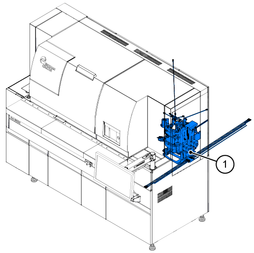
1
Wash wheel
Operational Overview
The wash wheel operation includes some or all of the steps below, but may vary depending on the specific assay being performed:
The analytical pick and place (PnP) places a reaction vessel (RV) in the wash wheel.
Every 8 seconds, the wash wheel turns and advances the RV clockwise one position. The RV proceeds through several "wash" phases.
The dispense probes (QS, D1, D2) dispense heated wash buffer into the RV to bring the total volume up to 500uL.
When the RV reaches a magnetic field, the field removes magnetic particles from suspension in the solution.
The aspirate probes (A1W, A2, A3) remove byproducts from the RV to leave behind only magnetic particles.
Note: Aspirate probes A2 and A3 can dispense wash buffer as part of the five-time (5x) wash process, depending on the specific assay. See the Technical Assay Guide (TAG) or the Assay Troubleshooting Matrix in the Applications Manual for more information.
Figure 457: Wash Phases
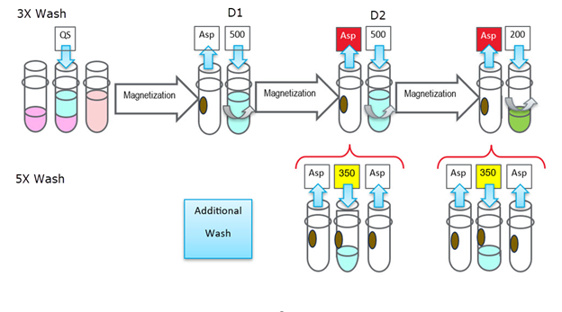
The operation repeats these steps twice (2x) with the addition of a lift-and-spin mixing step during the wash buffer dispense phase.
If the assay is a single step, a piggyback, or on the second step of a two-step assay
The operation dispenses 200 uL of heated substrate into the RV.
The operation lifts the RV, spins it, and sets it down.
If the assay is not a single step, a piggyback, or on the second step of a two-step assay, the operation lifts and spins the RV but no substrate is dispensed.
Note: The operation uses a camera to verify three different steps, each with an additional picture taken for
Effectiveness of aspiration
Dispensed volume of substrate
Effectiveness of the spin mix
The wash wheel presents the RV to the analytical PnP, which removes it from the wash wheel for further processing.
Component Locations and Functions
Figure 458:
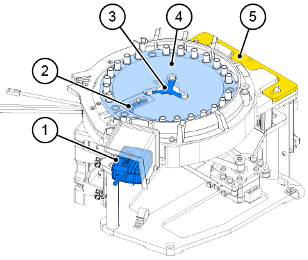
#
Component
Description and Function
1
Wash Wheel Camera
The camera takes images of the vessel before and after substrate dispense.
2
Wash Wheel Home Flag
This is the home flag for the wash wheel.
3
Ground Triangle
The ground triangle provides a path for static dissipation to the wash wheel.
4
Wash Wheel Plate
The wash wheel holds the vessels and moves them to the needed location. There are 27 holes on the wheel.
5
Arm Isolator
The wash arm isolator provides thermal isolation between the housing heater and the support for the wash arms.
Figure 459:
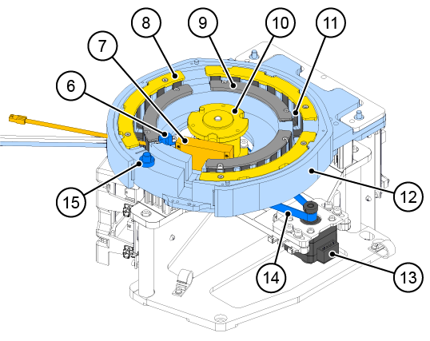
#
Component
Description and Function
6
Wash Wheel Home Sensor
There are three of the straight sensor on the wash wheel subsystem. This one is used as the home sensor for the wheel.
7
Wash Wheel Camera Backlight
The backlight provides illumination for the camera image of the vessel.
8
Outside Retainer
There are three outer magnet retainers, each hold down the outside of 7 magnet yokes.
9
Inside Retainer
There are three inner magnet retainers, each hold down the inside of 7 magnet yokes.
10
Rotary Extension
The wheel that holds the vessels is mounted to the rotary extension. This extension locates the wheel and thermally isolates it from the wheel drive.
11
Magnet Yoke
Two magnets are potted in the yoke assembly that locates them relative to the vessel (one on either side of the vessel). There are 21 magnet yokes mounted in the housing.
12
Housing and Heater
This part locates the magnets for the wash process, supports and aligns the aspirate and dispense arms to the wheel, and provides temperature control for the vessel.
13
Wash Wheel Drive Motor
This motor is used to drive the motion of the wheel. It is also used on the incubate wheel.
14
Wash Wheel Drive Belt
This belt is used to drive the motion of the wheel. It is also used on the incubate wheel.
15
Alignment Pin
The alignment pin on the housing is used to aid in mechanically setting the position of the analytic PnP. Alignment to this pin ensures alignment of the PnP to the wheel.
Figure 460:
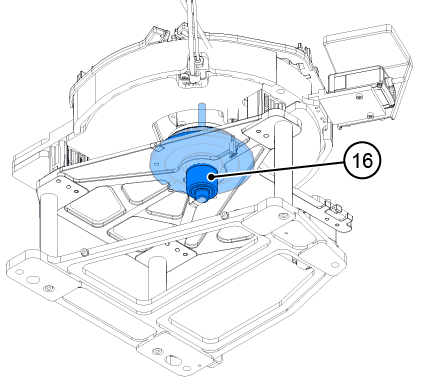
#
Component
Description and Function
16
Common Drive Assembly
The common drive assembly is the interface between the drive motor and the wash wheel. It transfers the motor motion to the wheel.
Figure 461:
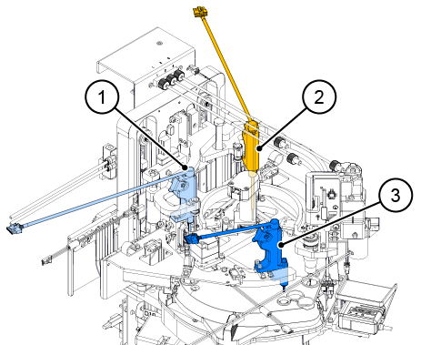
1
D1 Dispense Probe Assembly
2
D2 Dispense Probe Assembly
3
QS Dispense Probe Assembly
Figure 462:
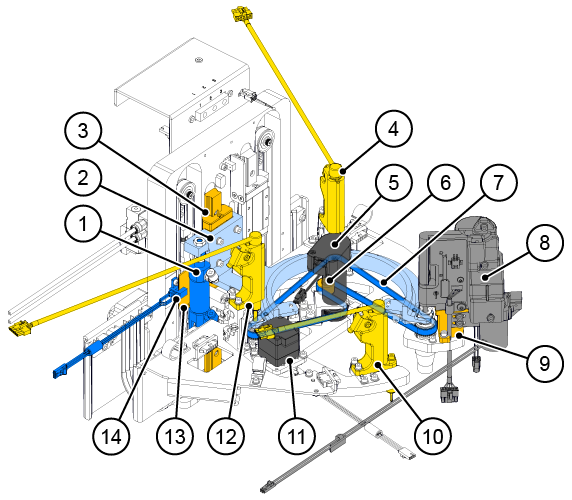
#
Component
Description and Function
1
Eject Plate Pneumatic Cylinder
This is the pneumatic cylinder that drives the vertical motion of the eject plate.
2
Eject Plate Assembly
The eject plate is the middle plate that removes the vessel from the spin mix collet after mixing is complete.
3
Dispense Arm Linear Rail
This linear rail guides the vertical motion of the dispense plate and the eject plate.
4
D2 Dispense Probe Assembly
This probe (used in 2 locations) provides heated wash buffer to the vessel at the D1 and D2 positions.
5
Mixer Motor/Encoder
This motor drives the spin mixers at all three mixing locations (D1, D2, and substrate).
6
Mixer Belt Idler Pulley
This idler assembly supports the motion of the spin mix motor to drive the spin mixers.
7
Mixer Belt
This belt drives the mixing motion for all three spin mix collets.
8
Substrate Heater/Probe Assembly
This assembly dispenses heated substrate to the vessel.
9
Substrate Isolator
This is the mount tower for the substrate probe, which also acts as a thermal isolator.
10
QS Dispense Probe Assembly
This probe provides heated wash buffer to the vessel at the beginning of the wash wheel processing to get all vessels up to the same fluid starting volume.
11
A1 Wash Station Motor Assembly
The A1 wash motor moves the A1 wash station into a position to wash the A1 probe and then back out of position to allow the A1 probe to move past it into a vessel.
12
D1 Dispense Probe Assembly
This probe (used in 2 locations) provides heated wash buffer to the vessel at the D1 and D2 positions.
13
Dispense Plate Home Flag
This is the home flag for the dispense arm.
14
Dispense Plate Home Sensor
This is one of two sensors of this type used on the wash wheel subsystem and is the sensor to indicate the home position of the dispense plate.
Figure 463:
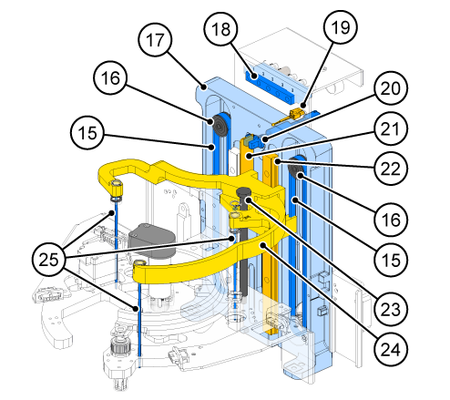
#
Component
Description and Function
15
Wash Arms Drive Belt
This belt (used 2 places) drives the vertical motion of both the aspirate arm and the dispense arm.
16
Wash Arm Idler Pulley
These pulleys (used in 2 places) support the vertical motion of both the aspirate arm and the dispense arm.
17
Arm Support
The arm support provides the structure for the aspirate and dispense plate drive system and ensures alignment between the arms and the housing.
18
Aspirate Manifold
This manifold is the connection point for aspirate probe tubing.
19
Ambient Temperature Thermistor
This sensor detects the ambient condition in the area of the heated probes for probe set-point compensation
20
Aspirate Arm Home Sensor
There are three of the straight sensor on the wash wheel subsystem. This one is used as the home sensor for the aspirate arm.
21
Aspirate Arm Home Flag
This is the home flag for the aspirate arm.
22
Aspirate Arm Linear Rail
This linear rail guides the vertical motion of the aspirate plate.
23
Arm Spacer
This spacer ensures the space between the aspirate and dispense plates is maintained to ensure that aspirate probes stay aligned with the dispense plate.
24
Wash Wheel Aspirate Arm
This is the upper most probe plate to which all three aspirates probes are mounted.
25
Aspirate Probe
The aspirate probes (used in 3 locations) aspirate fluid out of the vessel after magnetization. Aspirate probes also dispense wash buffer.
Figure 464:
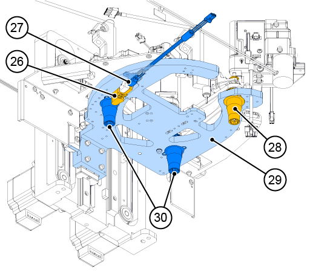
#
Component
Description and Function
26
A1 Wash Station
This is the acrylic manifold that washes the tip of the A1 probe. It has an input port for external washing of the probe and a vacuum port for removal of wash buffer. The probe is also aspirating at the time of the wash for internal washing of the probe as well.
27
A1 Wash Station Home Sensor
This is one of two sensors of this type used on the wash wheel subsystem and is the sensor to detect the position of the A1 wash station.
28
Substrate Mixer/Spinner/Ejector Assembly
The spin mix assembly picks up the vessel from the wash wheel at the substrate location, spin mixes the vessel, and then holds it as it is lowered back into the wheel. The pulley at this location is smaller than the pulleys at the other locations, so the RPM at the substrate position is 1.25 times the motor RPM.
29
Dispense Plate Assembly
This is the lower most probe plate to which all three heated buffer dispense probes and the substrate probe are mounted. The dispense probe plate also holds and drives the spin mix motion and the A1 wash station.
30
D1/D2 Mixer/Spinner/Ejector Assembly
The spin mix assembly (used in 2 places) picks up the vessel from the wash wheel at the D1 and D2 locations, spin mixes the vessel, and then holds it as it is lowered back into the wheel. The pulley on this assembly is the same size as the pulley on the motor, so the RPM at these positions matches the RPM of the motor.
Figure 465:
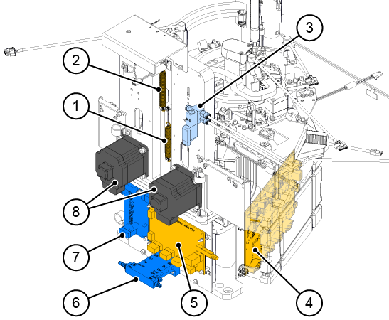
#
Component
Description and Function
1
Dispense Arm Counterbalance Spring
This spring functions as a counterbalance for the dispense arm in the event that motor power is lost.
2
Aspirate Arm Counterbalance Spring
This spring functions as a counterbalance for the aspirate arm in the event that motor power is lost.
3
Eject Plate Pneumatic Solenoid Valve
The valve provides air to the eject plate.
4
dMCC PCB
This board provides the motion control for the four stepper motors on the subsystem.
5
Temperature Control PCB
This board provides temperature control to the 4 probes on the wash wheel subsystem. The housing temperature is controlled by the temperature board on the incubate wheel assembly.
6
Dispense Plate Tubing Manifold
This manifold provides a tubing interface for the dispense plate tubing.
7
Spin Mixer PCB
This board drives the spin mix motion.
8
Wash Arm Drive Motor
This motor (used in two places) drives the vertical motion of the aspirate and dispense arms.
Component and Interaction Block Diagram
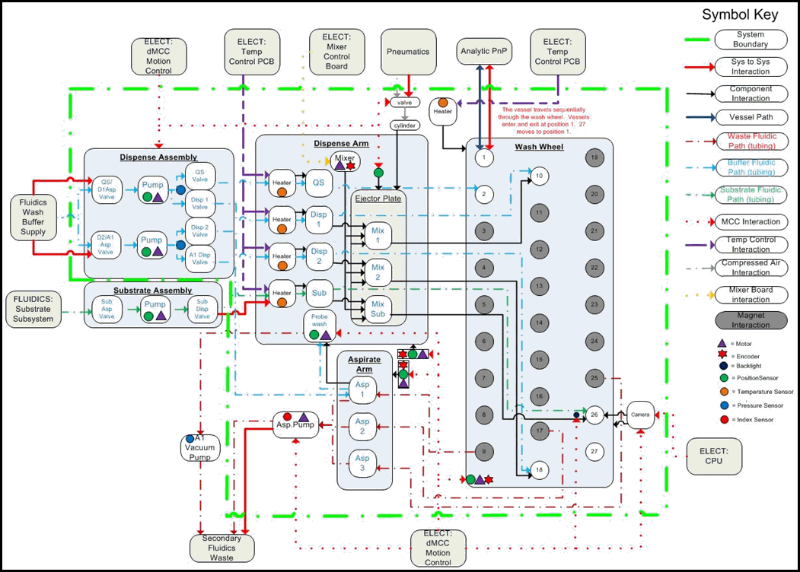
Interacting and Intersecting Devices
The wash wheel interacts with the following modules: